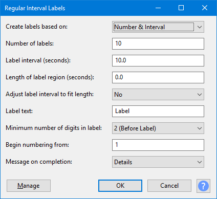

Regular Interval Labels
You can specify the number of labels and the interval between them, or fit labels to the current audio selection. Each label produced can contain specified label text and the labels can be given sequential numbers before or after the text.
This effect requires an audio selection, even if the selection is not used.- Accessed by:
- 
| "Regular Interval Labels" may be used to divide a long recording into sections, which may then be exported in one process using |
| If the selection includes one or more label tracks, the new labels generated by this effect will be merged into the first selected label track. To generate labels into a new label track, ensure that no labels tracks are included in the selection. |
Create labels based on
This enables you to choose the label placement method:
To create a chosen number of labels within the selection, select Number of Labels  from the dropdown (this is the default setting).
from the dropdown (this is the default setting).
To place labels within the selection a chosen distance apart, select Label Interval  from the dropdown then enter that distance in Label interval (seconds).
from the dropdown then enter that distance in Label interval (seconds).
Number & Interval
If you selected Number & Interval  (the default) then the specified number of labels will be created at the specified intervals. The number of labels may be between 1 and 1000 (default: 10 labels). The interval may be between 0.001 3600 seconds (default: 10 seconds). The selection is ignored by this labeling method.
(the default) then the specified number of labels will be created at the specified intervals. The number of labels may be between 1 and 1000 (default: 10 labels). The interval may be between 0.001 3600 seconds (default: 10 seconds). The selection is ignored by this labeling method.
Number of labels
If you selected Number of Labels  then your specified number of labels (default is 10) will be created to fit the selected region. The number can be changed by typing in the input box, the allowed range is between 1 and 1000 labels.
then your specified number of labels (default is 10) will be created to fit the selected region. The number can be changed by typing in the input box, the allowed range is between 1 and 1000 labels.
Label interval (seconds)
If you selected Label Interval  then the labels will be placed at your specified interval to fit the selected region. The default interval is 10.0 seconds. The allowed range is between 0.001 and 3600 seconds.
then the labels will be placed at your specified interval to fit the selected region. The default interval is 10.0 seconds. The allowed range is between 0.001 and 3600 seconds.
Length of label region (seconds)
When set to zero, point labels are generated. When set greater than zero, region labels are generated, each with the duration specified by this control. The allowed range is 0 to 3600 seconds.
| To create region labels that meet end to end, use either the Number & Interval |
Adjust label interval to fit length
The default setting for this control is No  .
.
If you select Yes  from the dropdown for this control, it adjusts your chosen label interval if necessary to make all the segments of equal length, including the final segment between the last label and the end of the selection.
from the dropdown for this control, it adjusts your chosen label interval if necessary to make all the segments of equal length, including the final segment between the last label and the end of the selection.
- Point labels:
- (Length of label region = 0)
- "Segments" are defined as the time between one label and the next (or the final label and the end of the selection). In other words, segments are the same as the label intervals.
- Region labels:
- (Length of label region greater than 0)
- "Segments" are defined as the time from the start of the label to the end of the label. In other words, the segments are the same as the label regions.
When set to No  , the interval between labels will be exactly the length specified in the Label interval control, but the final segment from the last label to the end of the selection may be different (depending on whether the selection length is exactly divisible by the specified interval duration.
, the interval between labels will be exactly the length specified in the Label interval control, but the final segment from the last label to the end of the selection may be different (depending on whether the selection length is exactly divisible by the specified interval duration.
When Number & Interval  is selected, the label interval will always be the length specified by the Label interval.
is selected, the label interval will always be the length specified by the Label interval.
When Number of Labels  is selected, the labels will always be placed evenly to fit the selection.
is selected, the labels will always be placed evenly to fit the selection.
- For point labels, the interval will always be the length of the selection divided by the number of labels.
- For region labels, the end of the final region will always be at the end of the selection.
Label text
The text that will be included in each label. The default setting is Label but this can be replaced by any text (or no text) by using the input box.
The label text may include spaces and/or punctuation characters, but note that if you intend to use the labels with Export Multiple, some characters may not be valid for file names.
Minimum number of digits in label
Choose the minimum number of number of digits in the label numbers and whether the number is placed before or after the label text. The default setting is 2(before label)  . With that setting, if you had 10 labels with "Label" as the label text, the first label would be "01Label", the next "02Label" and the last would be "10Label".
. With that setting, if you had 10 labels with "Label" as the label text, the first label would be "01Label", the next "02Label" and the last would be "10Label".
If you select None - text only  then no numbering will be applied to the labels. If you choose this and set no label text then you will produce a set of empty labels.
then no numbering will be applied to the labels. If you choose this and set no label text then you will produce a set of empty labels.
Begin numbering from
If a minimum number of digits has been chosen in the control above, enter the number from which the sequential numbering will start. The default value of 1 can be changed by typing in the input box. You can enter any whole number equal or greater than 0.
Message on completion
This setting determines what messages are displayed when the effect completes.
| If you wish to use this effect in a macro for batch processing, it can be useful to disable message reports. |
- Details
 (default)
(default)
- Displays a message withe the number of labels generated, and the interval between them.
- In the case of region labels, the length of the region is also shown.
- If region labels overlap, a warning is also displayed.
- Warnings only
- If region labels are creared and they overlap, a warning is displayed.
- None
- No messages are displayed on completion.
Buttons
Clicking on the command buttons give the following results:
- gives a dropdown menu enabling you to manage presets for the tool and to see some detail about the tool. For details see Manage presets
- applies the effect to the selected audio with the current effect settings and closes the dialog
- aborts the effect and leaves the audio unchanged, closing the dialog
 brings you to the appropriate page in the Manual, this page
brings you to the appropriate page in the Manual, this page